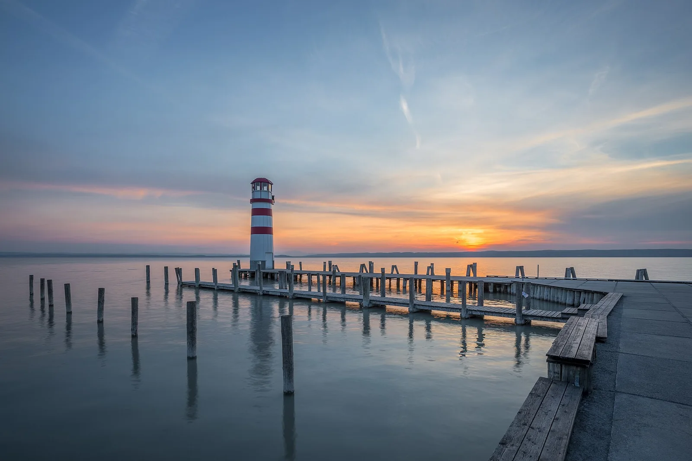

Podersdorf — Lac de Neusiedl
Burgenland, Autriche · windsurf, kitesurf, baignade

Plage de la rive est du lac de Neusiedl, un immense lac des steppes très peu profond. On a pied loin du bord, ce qui en fait un spot rêvé pour apprendre le windsurf et le kite, et un rendez-vous majeur de la glisse autrichienne.
- Lieu
- Burgenland, Autriche
- Niveau
- Débutant
- Activités
- windsurf, kitesurf, baignade
- Type d'eau
- lake
- Coordonnées
- 47.86, 16.83 (position approximative du secteur)
Dangers à connaître
- Orages d’été et coups de vent soudains.
- Roselières et eau trouble : garde tes repères depuis la plage.
Le conseil d'Ocean Buddy
Profite de l’eau peu profonde pour débuter, mais surveille la météo : les orages d’été lèvent vite un vent violent.
Ouvrir dans Ocean Buddy Télécharger sur l'App Store
Source : Fiche Ocean Buddy · septembre 2026 · à vérifier localement.